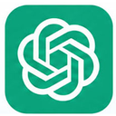

La imaginación al poder: IA generativa y procesos creativos para la enseñanza universitaria — Docente: Diego Cagide
Clase 2
Gramática del prompt y producción textual
Bienvenida
Bloque A — ¿Qué son los LLM?
Un panorama de LLMs

ChatGPT ↗
OpenAI
Tipo de asistente
Conversacional generalista
Funciones principales
Redacción, análisis de documentos, programación, generación de imágenes
Por qué conviene conocerla
Es el punto de entrada más extendido; tiene un ecosistema amplio de GPTs personalizados
Claude ↗
Anthropic
Tipo de asistente
Conversacional orientado a texto extenso
Funciones principales
Redacción y edición de textos largos, análisis de documentos, programación
Por qué conviene conocerla
Sostiene coherencia en documentos y conversaciones extensas, con buen seguimiento de instrucciones complejas
Gemini ↗
Tipo de asistente
Multimodal integrado
Funciones principales
Comprensión de texto, imagen, audio y video; búsqueda en tiempo real
Por qué conviene conocerla
Integración nativa con Gmail, Docs, Drive y el buscador de Google
Copilot ↗
Microsoft
Tipo de asistente
Asistente de productividad
Funciones principales
Redacción de documentos, resumen de correos, análisis en Excel, generación de presentaciones
Por qué conviene conocerla
Integración directa con Word, Excel, Outlook y Teams
Meta AI ↗
Meta
Tipo de asistente
Conversacional integrado a redes sociales
Funciones principales
Búsqueda, generación de texto e imágenes, conversación
Por qué conviene conocerla
Está disponible dentro de WhatsApp, Instagram y Facebook, sin necesidad de otra aplicación
Perplexity ↗
Perplexity AI
Tipo de asistente
Motor de búsqueda conversacional
Funciones principales
Respuestas con citas y enlaces a fuentes, búsqueda académica
Por qué conviene conocerla
Cada respuesta muestra de dónde sacó la información, lo que facilita validarla
DeepSeek ↗
DeepSeek
Tipo de asistente
Conversacional de código abierto
Funciones principales
Redacción, programación, razonamiento
Por qué conviene conocerla
Rendimiento competitivo con un costo de uso más bajo; varios modelos de código abierto
¿Qué pueden hacer?
La interfaz
Video: así es la interfaz de un LLM
Video pendiente
Pegá acá el <iframe> que te da YouTube en "Compartir → Insertar"
Bloque B — El prompt: gramática y estructura
Rol
Contexto
Acción + objeto
Focalización
Restricciones
Formato de salida
Prompt simple
Ejemplo
Ejemplo
Ejemplo
Prompt medio
Ejemplo
Prompt complejo
Ejemplo 1
Ejemplo
Ejemplo 2
Ejemplo
Bloque C — Usos posibles para el aula, parte 1: usos generales
Usos generales: trabajo con textos
Producir texto
Estructurar la información y generar archivos
Traducir
Trabajar sobre archivos adjuntos
Archivos de texto
⚠️ ¡Cuidado!
Otros archivos
Ejemplo
Revisar lecturas complementarias
Ejemplo
Bloque D — Usos posibles para el aula, parte 2: la IA como asistente de lectura e investigación
Reponer lo que el texto no desarrolla
— Roselli, N. D., "La construcción sociocognitiva entre iguales", capítulo 1 (conclusiones)
Ejemplo
Bloque E — Estrategias de validación
Legitimidad
Estrategias para validar la información de IA
Lectura lateral
Video: cómo funciona NotebookLM
Video pendiente
Pegá acá el <iframe> que te da YouTube en "Compartir → Insertar"
Voz propia
Estrategias para validar la voz propia